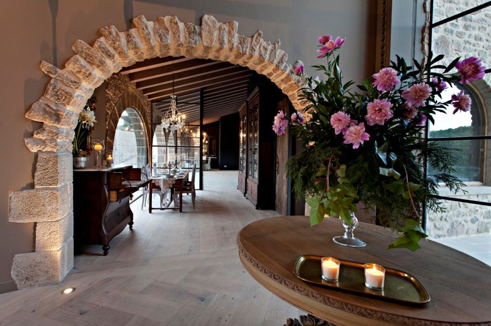
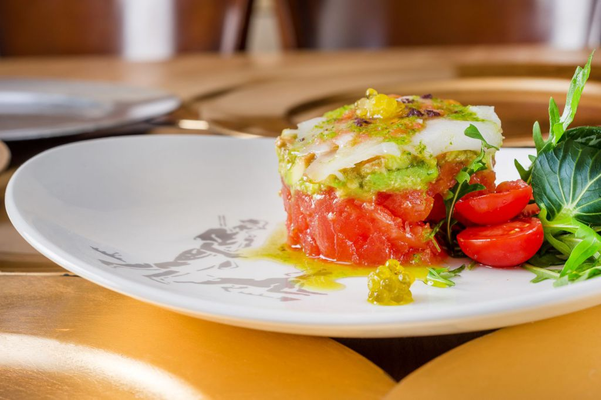
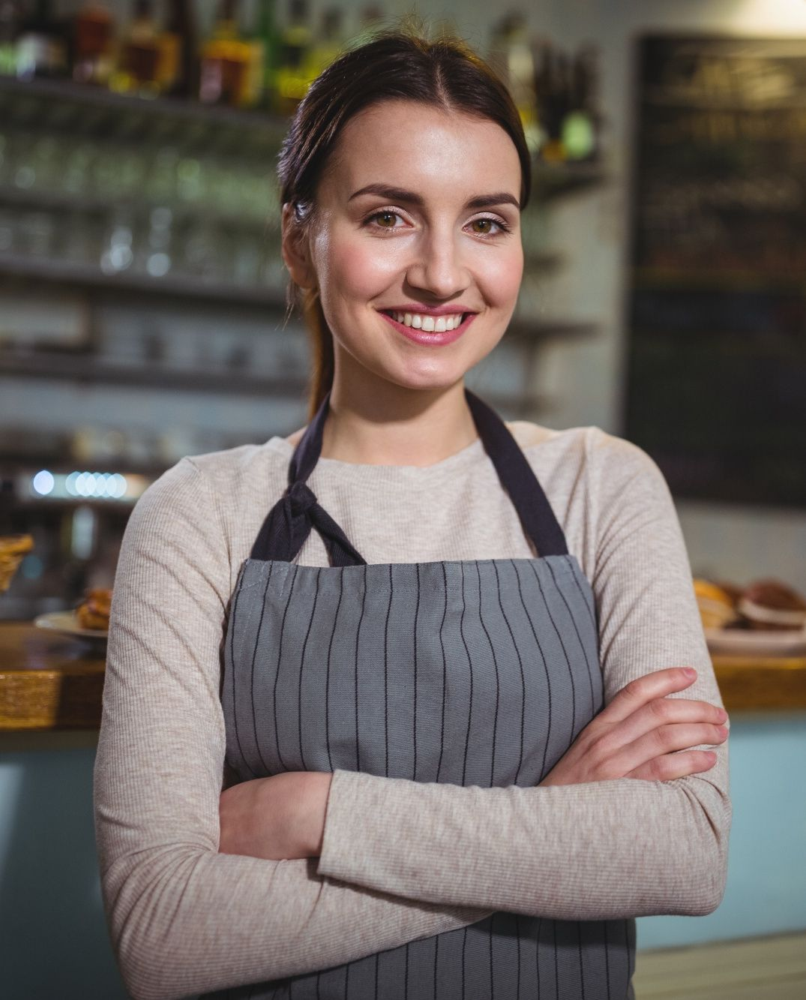
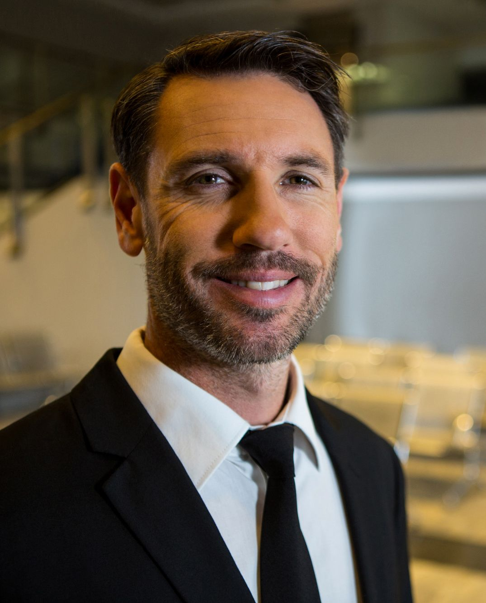

Serveis
La qualitat i dedicació en el servei de tot l’equip de persones que formen l’hotel, el converteixen en un entorn de tracte familiar, on prima la confiança i el benestar: Bar-Restaurant, Salons amb llar de foc, Sala de reunions, Biblioteca,
Gastronomia
Al restaurant es pot gaudir d’una cuina tradicional amb tocs de creativitat, amb una carta de plats acuradament seleccionats.

El nostre equip

Maria Puig
Cap de cuina

David Stein
Director
Irene Johansen
Cap de sala